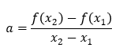

A função polinomial do 1º grau, f(x)=ax+b, possui dois coeficientes, coeficiente angular e coeficiente linear. Ambos exercem papeis importantes na representação gráfica desta função, sendo o angular responsável pela inclinação da reta e o linear, o ponto que a função intersecta o eixo Y. Podemos determinar o coeficiente angular da seguinte forma:

→
Confira aqui!
sendo A(x1,y1) e B(x2,y2) pontos pertencentes ao gráfico da função. Outra maneira de apresentar o coeficiente angular é através da tangente, sendo a=tg z, onde z é o ângulo formado pela gráfico da função (uma reta) e o eixo X.